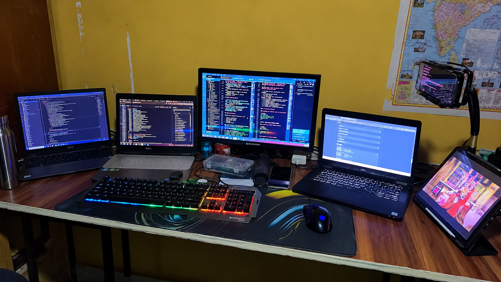
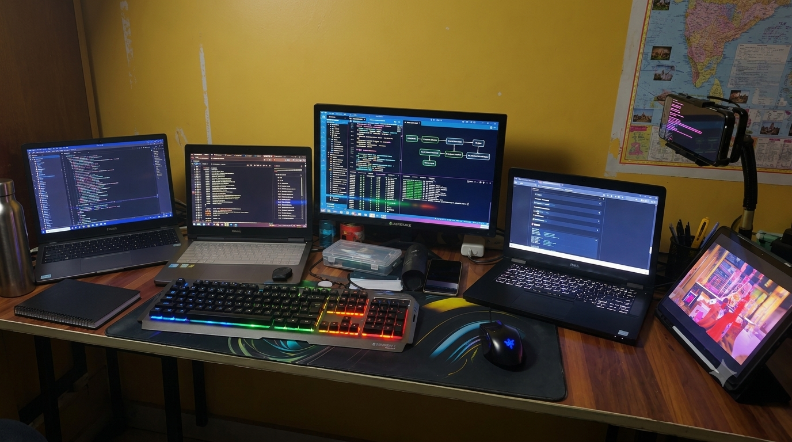
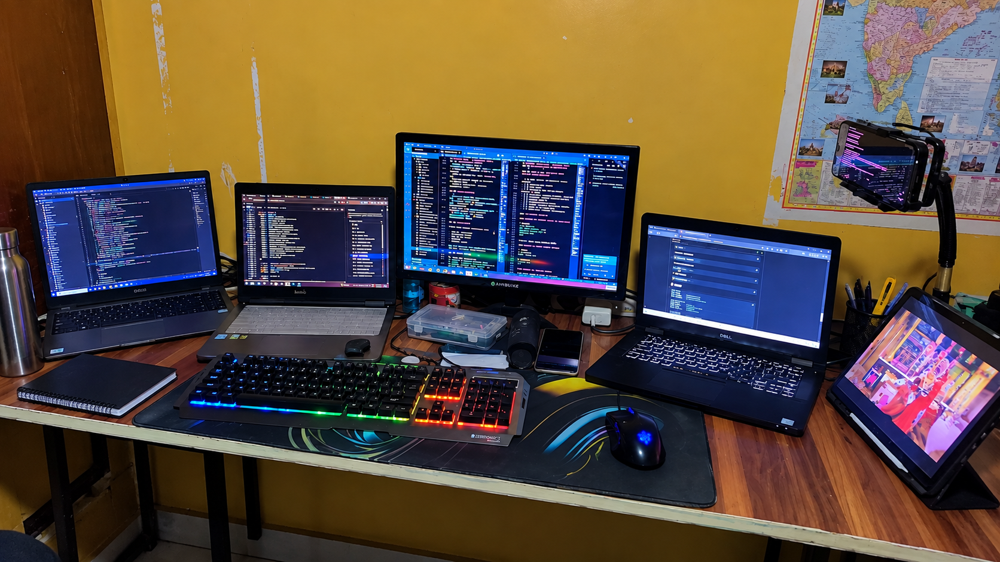

01AI / AUTOMATIONAI AGENT WORKSPACE
HARIOM AI
AI-agent workspace for task planning, multiple model providers, tool execution and browser/computer automation.
OPEN PROJECT ↗Hi, I'm
Software Developer
01AI-agent workspace for task planning, multiple model providers, tool execution and browser/computer automation.
OPEN PROJECT ↗Clean browser-based expense tracking with live balance, categorisation, transaction history and CSV export.
OPEN PROJECT ↗
03Extraction and cleaning workflow for page metadata, links, URL normalisation and structured exports.
OPEN PROJECT ↗
04Python utility for system actions, browser and app launching, file workflows and practical desktop automation.
OPEN GITHUB ↗Interfaces → APIs → data → automation → deployment.
I build practical software while continuously improving how I design, connect and automate systems.